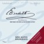

Music: SYLVESTER LEVAY Lyrics: MICHAEL KUNZE
| Portada Cover |
Versión Version |
Año Year |
Idioma Language |
# of Tracks # de Pistas |
Media | BitRate | Elenco Cast |
Título de publicación Release Title |
Notas Notes |
|---|---|---|---|---|---|---|---|---|---|
 |
Original Vienna Cast | 1992 | DE | 26 | m4a | 323 | Pia Douwes, Uwe Kröger, Ethan Freeman, Viktor Gernot, Andreas Bieber, Else Ludwig | ||
 |
Pia Douwes | 1992 | DE, EN | 2 | mp3 | 160 | Pia Douwes | Ich gehör nur mir | |
 |
Original Hungarian Cast | 1996 | HU | 25 | m4a | 323 | Janza Kata, Master Tamás, Földes Tamás, Szomor György, Sasvári Sándor, Sáfár Mónika, Molnár Piroska, Felföldi Anikó | ||
 |
Takarazuka Snow Troupe | 1996 | JA | 53 | mp3 | 192 | Saki Asaji, Ayaka Shiraki, Kou Minoru, Jun Shibuki, Ay Izumo | エリザベート | |
 |
Takarazuka Snow Troupe | 1996 | JA | 4 | mp3 | 128 | Mari Hanufasa, Maki Ichiro, Fubuki Takane | エリザベート | Maxi Single |
 |
Takarazuka Star Troupe | 1996 | JA | 53 | mp3 | 128 | Saki Asaji, Ayaka Shiraki, Kou Minoru, Jun Shibuki, Ay Izumo | エリザベート | |
 |
Takarazuka Star Troupe | 1996 | JA | 4 | mp3 | 128 | Saki Asaji, Kou Minoru, Ayaka Shiraki | エリザベート | Promotional single |
 |
Vienna Replacement Cast | 1996 | DE | 36 | m4a | 323 | Maya Hakvoort, Addo Kruizinga, Bruno Grassini, Leon Van Leeuwenberg, Thomas Harke, Isabel Weicken, Wolfgang Pampel | ||
 |
Takarazuka Cosmos Troupe | 1998 | JA | 52 | mp3 | 192 | Mari Hanufasa, Maki Ichiro, Fubuki Takane | エリザベート | |
 |
Nederlandse Promo | 1999 | NL | 3 | mp3 | 173 | Pia Douwes, Stanley Burleson | Promotional recording with 2 songs not included on the cast album | |
 |
Nederlandse Single | 1999 | NL | 3 | mp3 | 128 | Pia Douwes, Stanley Burleson | ||
 |
Original Dutch Cast | 1999 | NL | 16 | m4a | 319 | Pia Douwes, Stanley Burleson, Wim van den Driessche, Doris Baaten, Jeroen Phaff, Addo Kruizinga, Nico Schaap | ||
 |
Original Swedish Cast | 1999 | SV | 5 | mp3 | 320 | Cecilie Nerfont, Björn Eduard, Martin Kagemark, Patrik Martinsson, Christer Nerfont | Unreleased promotional recording. Not the best sound quality | |
 |
Original Toho Cast | 2000 | JA | 7 | m4a | 309 | Maki Ichiro, Masaaki Uchino, Soma Suzuki, Yoshio Inoue, Jun Hatsukaze, Masahiro Takashima | エリザベート | |
 |
Original Essen Cast | 2001 | DE | 1 | mp3 | 192 | Pia Douwes, Uwe Kröger | Promotional recording | |
 |
Original Essen Cast | 2001 | DE | 16 | m4a | 319 | Pia Douwes, Uwe Kröger, Carsten Lepper, Michael Shawn Lewis, Jesper Tydén, Gabrielle Ram | ||
 |
Original Toho Cast | 2001 | JA | 51 | m4a | 317 | Maki Ichiro, Masaaki Uchino, Soma Suzuki, Yoshio Inoue, Jun Hatsukaze, Masahiro Takashima | エリザベート | |
 |
Original Toho Cast | 2001 | JA | 51 | m4a | 317 | Maki Ichiro, Yuichiro Yamaguchi, Soma Suzuki, Yoshio Inoue, Jun Hatsukaze, Masahiro Takashima | エリザベート | |
 |
Pia Douwes | 2001 | DE | 3 | mp3 | 226 | Pia Douwes | Ich gehör nur mir | |
 |
Studio Cast Recording | 2001 | DE | 16 | mp3 | 128 | |||
 |
10th Anniversary Concert | 2002 | # | 26 | m4a | 324 | Pia Douwes, Maki Ichiro, Maya Hakvoort, Maike Boerdam, Janza Kata, Cecilie Nerfont, Uwe Kröger, Felix Martin, Ethan Freeman, Thomas Borchert, Andreas Bieber Jeroen Phaff, Stanley Burleson, Jesper Tydén | ||
 |
Takarazuka Flower Troupe | 2002 | JA | 52 | mp3 | 160 | Sumire Haruno, Rei Otori, Mao Ayabuki, Sumire Haruno, Sakiho Juri, You Natsumi | エリザベート | |
 |
Takarazuka Flower Troupe | 2002 | JA | 8 | mp3 | 320 | Sumire Haruno, Rei Otori, Mao Ayabuki, Sumire Haruno, Sakiho Juri, You Natsumi | エリザベート | Maxi Single |
 |
Vienna Revival Cast | 2003 | DE | 5 | mp3 | 320 | Maya Hakvoort, Kamaras Máté, Sekan Kaya, Else Ludwig | ||
 |
Sing Along | 2004 | ♫ | 8 | mp3 | 157 | |||
 |
Toho Blue Cast | 2004 | JA | 24 | m4a | 320 | Maki Ichiro, Masaaki Uchino, Soma SuzukiMasahiro Takashima, Jun Hatsukaze | エリザベート | |
 |
Toho Orange Cast | 2004 | JA | 24 | m4a | 321 | Maki Ichiro, Yuichiro Yamaguchi, Soma SuzukiMasahiro Takashima, Jun Hatsukaze | エリザベート | |
 |
Vienna Revival Cast | 2004 | DE | 15 | m4a | 318 | Maya Hakvoort, Kamarás Máté, Serkan Kaya, André Bauer, Lukas Perman, Else Ludwig | ||
 |
Original Stuttgart Cast | 2005 | DE | 8 | m4a | 318 | Maike Boerdam, Olegg Vynnyk, Carsten Lepper, Ivar Helgason, Niko Gaik, Karin Seyfried, Susan Rigvava-Dumas | ||
 |
Takarazuka Moon Troupe | 2005 | JA | 52 | mp3 | 192 | Nao Ayaki, Jun Sena | エリザベート | |
|  | Sing Along | 2006 | ♫ | 13 | mp3 | 160 | |||
 |
Takarazuka 10th Anniversary Concert | 2006 | JA | 76 | mp3 | 128 | Asato Shizuki, Saki Asaji, Rei Otori, Ayaka Shiraki, Ko Minoru, Tatsuki Koju | エリザベート | Both concerts in Osaka and Tokyo |
 |
Vienna Revival Cast | 2006 | DE | 43 | mp3 | 128 | Maya Hakvoort, Kamarás Máté, Serkan Kaya, André Bauer, Fritz Schmid, Else Ludwig, Dennis Kozeluh, Luzia Nistler, Kerstin Ibald | ||
 |
Takarazuka Snow Troupe | 2007 | JA | 52 | MP3 | 320 | Natsuki Mizu, Mao Ayabuki, Yuuki Mirai, Kei Otozuki, Kaname Ouki, Tomomi Ritsu, Chihaya Saeki, Yuri Shirahane | エリザベート | |
 |
Original Berlin Cast | 2008 | DE | 1 | mp3 | 192 | Annemieke van Dam | Promotional recording | |
 |
Songs In English | 2008 | EN | 7 | mp3 | 128 | Pia Douwes, Patricia Nessy, Felix Martin, Bernie Blanks, Maik Lohse | ||
 |
Original Antwerp Cast | 2009 | NL | 1 | mp3 | 128 | Ann van den Broeck, Dieter Troubleyn | Promotional Recording | |
 |
Takarazuka Moon Troupe | 2009 | JA | 52 | mp3 | 256 | Jun Sena, Shirosaku Ai, Ryouga Haruhi, Kiriya Hiromu, Ryuu Masaki, Nagina Ruumi, Koshino Ryuu | エリザベート | |
 |
Studio Cast Recording | 2011 | DE | 12 | mp3 | 128 | Wiener Musical Company | ||
 |
20th Anniversary Tour | 2012 | DE | 46 | mp3 | 320 | Annemieke Van Dam, Mark Seibert, Kurosch Abbasi, Matthias Edenborn, Oliver Arno, Betty Vermeulen, Elissa Huber, Dennis Kozeluh | ||
 |
Original Korean Cast | 2012 | KO | 43 | mp3 | 320 | Oak Joo Hyun, Kim Jun Su, Park Eun Tae, Min Young Ki, Lee Jung Hwa, Kim Seung Dae | 엘리자벳 | |
 |
Original Korean Cast | 2012 | KO | 52 | mp3 | 298 | Oak Joo Hyun, Tang Jun Sang, Park Eun Tae, Jeon Dong Suk, Yoon Young Suk, Kim Sun Young, Ryu Jung Han, Choi Min Chul, Kim Seung Dae | 엘리자벳 | Features both casts plus bonus tracks by pop star Kim Sun Young |
 |
Vienna Revival Cast | 2012 | DE | 49 | mp3 | 320 | Annemieke Van Dam, Mark Seibert, Kurosch Abbasi, Franziskus Hartenstein, Anton Zeterholm, Daniela Ziegler, Karin Filipic | ||
 |
Felix Martin | 2013 | DE | 5 | mp3 | 128 | Felix Martin | Der Letzte Tanz | |
 |
Takarazuka Flower Troupe | 2014 | JA | 52 | mp3 | 320 | Rio Asumi, Yuzuru Kurenai, Kaname Ouki, Tomu Ranju, Masaki Ryuu, Seina Sagiri, Kazuho Sou, Reon Yuzuki | エリザベート | |
 |
Japanese Revival Cast | 2015 | JA | 59 | mp3 | 320 | Mari Hanafusa, Yoshio Inoue, Yu Shirota, Yuta Furukawa, Tatsuki Kohju, Yuki Mirai, Hana Ranno, Takanori Sato, Mario Tashiro, Miyuki Tsurugi | エリザベート | |
 |
Jeon Dong Suk | 2015 | KO | 01 | mp3 | 320 | Jeon Dong Suk | Single | |
 |
Se7en | 2015 | KO | 1 | mp3 | 320 | Se7en | ||
 |
Takarazuka Cosmos Troupe | 2016 | JA | 52 | mp3 | 320 | Rion Misaki, Manato Asaka, Hikaru Aizuki, Chitose Junya, Suzuho Makaze, Minato Sakurag, Maira Mikaze, Rin Yuuma, Madonna Hoshikaze | エリザベート | |
 |
Takarazuka Moon Troupe | 2018 | JA | 52 | m4a | 320 | Reika Manaki, Ryo Tamaki, Kanato Tsukishiro, Yurino Touka, Rurika Miya, Chisei Akatsuki, Miyako Kagetsu, Yuuma Kizuki, Keito Ranze | エリザベート | |
 |
Seoul Replacement Cast | 2019 | KO | 2 | m4a | 256 | XIA | 마지막 춤 | Promotional recording |
 |
Vienna Concert Cast | 2019 | DE | 41 | m4a | 256 | Pia Douwes, Mark Seibert, David Jakobs, Viktor Gernot, Lukas Perman, Daniela Ziegler, Hans Neblung, Patricia Nessy | ||
 |
10th Anniversary Korean Cast | 2022 | KO | 9 | mp3 | 256 | Lee Ji-hye, Noh Min Woo, Lee Hae-jun, Gil Byeong-min, Kim Jun-Su, Lee Ji-hoon, Lim Eun-young, Jang Yoon-seok, Park Eun-Tae, Jang Yoon-seok, Kang Tae-eul, Ok Joo-hyun, Kang Tae-eul, Shin Sung-rok | 10주년 기념 녹음 | Promo tracks for the 10th Anniversary |